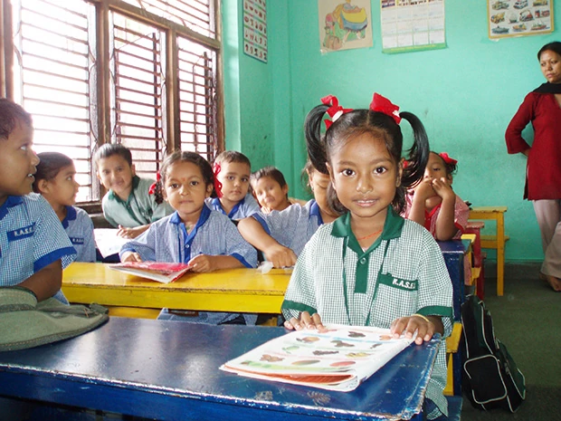
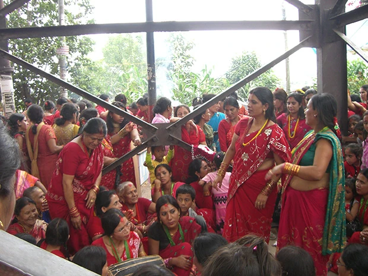
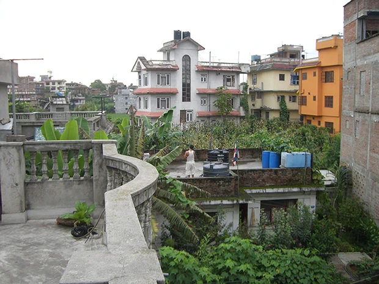

訪問した学校では、全て英語での授業が行われていて、４才でも英語の単語を宿題でやってきます。
驚きました。
「初めてネパールという国を訪問しました。
しかもホームスティという形で。
経済的には本当に貧しい国ですが、人々の温かさと笑顔は世界一と思います。
この留学プログラムは、初めての国ということ、英語が学べるということ、ネパールの生活が体験できるということで、参加を決めました。
英語レッスンは、こちら側の都合で、２０時間の中２時間しか受けなかったんですが、トピックについて詳しく話してくださりありがたかったです。
ネパールでのホームステイは、素晴らしくて、感動して、最後は涙涙の別れでした。
とても楽しく、ネパールの生の生活、文化、習慣がわかりました。
ネパール料理、サリー着付け、ショッピング、そしてダンス、歌（ちょうどお祭りの日。下記の写真のように、女性は赤いサリーを着てお寺にお参りし夜はダンスをします）、、、２晩楽しめました。
ホストファミリーは、皆さんとても優しくて、充実した１週間でした。
歓迎の気持ちがとてもありがたかったです。
今回一緒に参加した友人のＮ．Ｔさんと隣同士のお宅でホームステイでき、双方がとても仲の良いご家庭で、お互いの家で日本料理・ネパール料理のパーティーもでき、最高でした。

日本語教師ボランティアで訪問した学校の子供達は、しつけが行き届いていて、しかも、とても親しみやすく、素晴らしかったです。
ヨガの勉強もできる環境を作ってくださった先生もいらしてありがたかったです。
ネパールに滞在し、環境面やカースト制度はなかなか厳しいと感じましたが、人々の笑顔と思いやりが、素晴らしいと思いました。
「ナマステ」と、とても多くの人たちに挨拶したのですが、全員「ナマステ」と返してくれました。
長い列を作って買い物していてもみんな笑顔です。
みんなで助けてくれます。
こんな温かい国があるでしょうか。
ホストファミリーには、家族の一員としてとても温かく摂していただき、一般の観光では決してみられない、日本人が忘れてしまったコミュニティーの結束、共同体、みんなが助け合って生きていくことの大切さを学べました。
カースト制の是非、ヒンズー教のこと、祭りのこと、教育のことなど沢山のことが学べました。
自分の価値観がいかにステレオタイプだったのか思い知らされました。
皆さまもぜひ一度訪れてみてください。
とても感動の日々でしたので、またネパールへ行ってみたいと思います。
カトマンズ以外での滞在も可能であればもっと良いなあと思います。
いろいろと本当にお世話になりました。
また、いずれ行くときは連絡いたします。」

ネパールでは、どの家も雨水をためるタンクがあり、どの家も赤煉瓦で造られていてます。
ホームスティ先はとても恵まれた家庭が多いです。